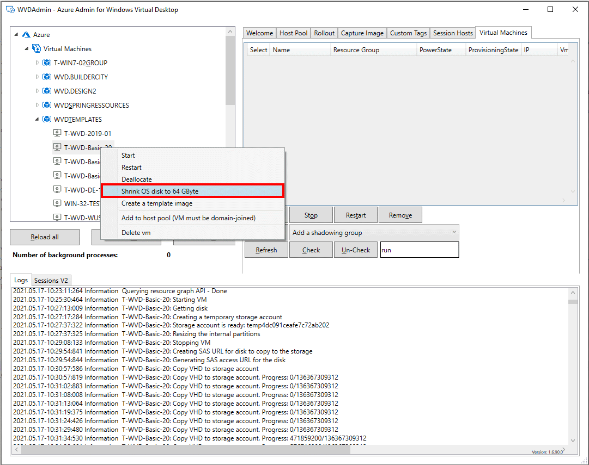

Shrink and resize an Azure VM disk or session host disk and create smaller images from a Golden Master

A Windows 10 image from the marketplace has a size of 128 Gbyte. So, all of your VM based on that image are deployed with a 128 Gbyte disk - even a “Golden Master” - typically used to build Azure Windows Virtual Desktop images. A clean Windows installation has a size of less than 40 Gbyte, and a 64 Gbyte OS disk is usually sufficient - even if FSLogix is used to store personal data.
-
But what are the advantages of smaller disks? First, they are some reason to use smaller disks, like: A smaller disk costs less. Usually 50% less and with the same performance for HDD and standard SSD (the premium disk has more IOPS for the larger size)
-
Ephemeral disks for smaller VM sizes: Ephemeral disks are really good for VM without local user data - like session hosts using FSLogix. VMs with ephemeral disks living on the Azure hypervisor without a network-attached disk - the OS disks are created directly in the cache of the hypervisor.
- Advantages: No costs for the disk and high performance. Unfortunately, the cache size is limited based on the VM size. To run a 128 Gbyte Windows, (e.g.) a D8ds_v4 (8 cores, 32 Gbyte RAM, 200 GiB cache) is needed. That is maybe not attractive for a single user session host. If we go with a 64 Gbyte disk image, a D4ds_v4 can be used (4 cores, 16 Gbyte, 100GiB cache), which costs half.
My favorite is the ephemeral disk approach for some environments because this offers high performance for a low price and often fits Windows Virtual Desktop.
The challenge
The challenge is to resize the Golden Master. There are some good posts about doing that, but it’s not easy and needs many different steps. Therefore, I added this as a feature in WVDAdmin from the release of today. So feel free to resize your Golden Master to 64 Gbyte, grab an image and deploy smaller session hosts - may be as ephemeral with #WVDAdmin / #AVDAdmin
I recommend making a snapshot first and keep in mind that the process takes a while (between 20 and 60 minutes). But you only have to do it once.
What happens in the background:
- The Windows partition will be resized to 31 Gbyte
- The disk is uploaded to a temporary created storage account (that takes a while)
- The disk is resized, and the signature for a 32 Gbyte disk is written
- A new 32 Gbyte managed disk is created
- The disk is attached to the VM
- The temporary storage account is deleted
Site node: How to use ephemeral VMs in a very cool way?
I’m currently working on the following solution called “Project Hydra” to managed WVD. In addition, I added an “Autoscale” feature that is going hand-in-hand with Microsoft’s “Power-on-Connect”:
- In the morning, a bunch of ephemeral session hosts are automatically created to handle the first user storm
- Some stand-by session hosts (deallocated) with standard SSD are then started with Power-On-Connect if a user tries to log in, and all of the ephemeral hosts are in use
- And for sure: Deallocation of the “normal” hosts and deletion of the ephemeral hosts are part of the autoscaling
Preqersits to shrink a disk:
- Windows operating system installed on a 128 Gbyte disk or greater
- Only drive C: (exact two partitions: recovery partition and C-drive - default)
Check out the newest version of #WVDAdmin / #AVDAdmin and check a short demo video about resizing a disk on YouTube (external Link).
